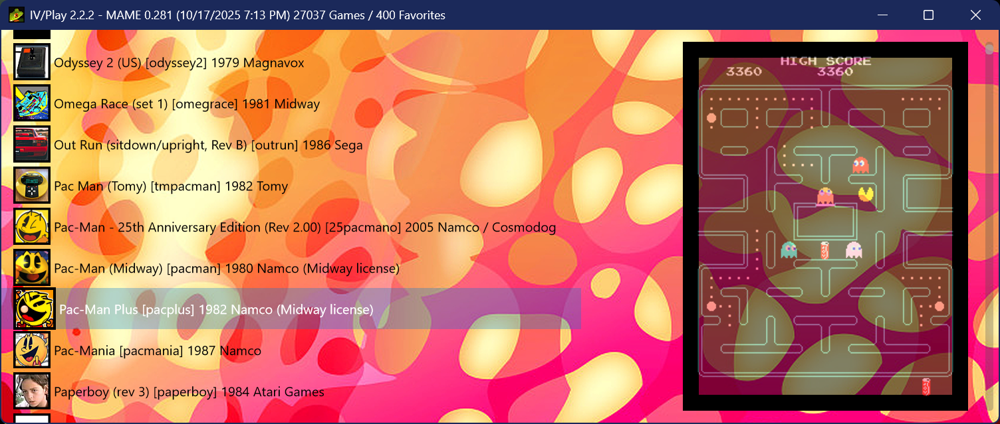

A high‑performance, keyboard driven front-end for MAME. Designed for today’s multi‑core, GPU‑powered PCs, its DirectX engine delivers smooth scrolling, instant artwork, and zero‑lag navigation. Browse, filter, and launch thousands of titles with fluid responsiveness on modern Windows systems.
Est. 08/11/1998 © john iv